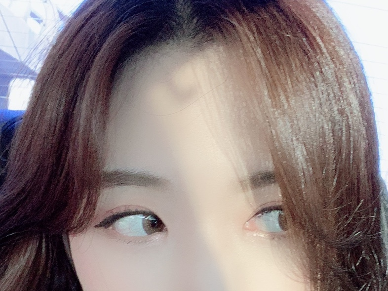
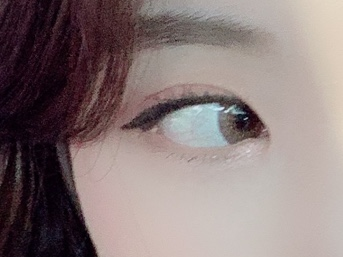
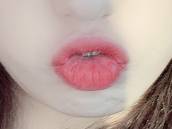
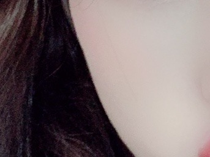

단점을 보완하고, 장점을 부각 시키는 다운이의 데일리 메이크업을 알아보기

Hair Design
애쉬브라운 염색
뿌리 볼륨을 줘서 머리 숱이 풍성해 보이도록 한다.
앞머리와 옆머리가 자연스럽게 이어지는 것이 가장 중요해야되는 부분
c컬펌이 풀린 부분은 안쪽으로도 넣어주고, 바깥으로도 뻗치게 해 자연스러운 느낌을 준다.

Eyes Make-up
캐치아이 브라운 캣 - 브라운 렌즈
대체로 핑크빛 도는 섀도우와 펄감이 많은 섀도우를 섞어 사용한다.
아이라인은 점막을 다 채우고 살짝 위로 올라가게 그린다.
마스카라는 컬링을 살려 위로 올라가게 잘 고정시켜준다.

Lip Make-up
건조하지 않게 립밤을 꼼꼼히 발라준다
누디한 색의 제품을 전체적으로 깔아준다.
매트한 타입의 핑크빛 도는 틴트를 가운데 중심으로 바른다.

Skin Make-up
21호 파운데이션을 바른다.
컨실러로 잡티나 다크서클을 가려준다.
쉐이딩은 자연스럽게 턱과 광대 위주로 해준다.
블러셔는 입술색과 맞춰 핑크빛 도는 가루타입제품으로 사선을 그려 바른다.